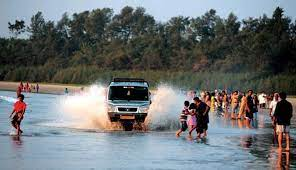

Places To Visit
St. Angelo Fort

Considered as one of the most historic sites in Kannur, the St. Angelo Fort was constructed by the first Portuguese viceroy of India. The fort is triangular in shape appears as a massive yet magnificent structure standing at the helm of the ruthless sea.
Muzhappilangad Beach
Famous as Kerala’s only drive-in beach, the Muzhappilangad offers some of the most stunning views of the yellow and orange sun setting along the golden sandy beaches of Malabar coast.Photography enthusiasts can take breathtaking shots of the ocean.
Ezhimala
Perched at a height of 286 meters, the Ezhimala hill is one of the most visually appealing Kannur tourist places. The hill is a part of an isolated cluster of hills and the vantage point offers bedazzling views of the sheer naked natural splendour around
Popular Things To Do
Dolphin Rides
Steeped in natural beauty, the Payyambalam Beach lies in the Kannur district.An added allure of this seaside is the opportunity of a winsome dolphin ride
Theyyam

The Theyyam festival usually held in from October to May every year. The colorful pageantry, the enthusiastic crowd and the religious favor are all worth witnessing
Tyndis Heritage Travel
Tyndis, an experiential travel company in the state, offers curated tours in the cultural and heritage walks and tours of historic towns of Kannur